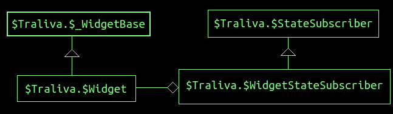

НАВЕРХ
$WidgetStateSubscriber

Данный класс наследуется от класса StateSubscriber.
Является базовым для классов для описания виджета (возможно, контейнера для каких-то априорно неизвестных дочерних виджетов). Конструктор пользовательского класса, отнаследованного от данного класса, используется в свойствах $layouts и $widgets объекта, передаваемого параметром в функцию Traliva.init().
В том случае, когда пользовательский класс описывает контейнер виджетов, в пользовательском классе (у самой функции конструктора) должно быть определёно свойство widgetsFields (список свойств, указанных в объекте, описывающем элемент лэйаута, по которым будут генерироваться виджеты, передаваемые третим параметром в конструктор при создании экземпляра данного класса).
function $Strip($p_wContainer, $p_options, $p_descr){
var $children = $Traliva.$WidgetStateSubscriber.call(this, $p_wContainer, $p_options, $p_descr);
...
if ($children)
this.$_updateLayout($children);
};
$Strip.prototype = Object.create($Traliva.$WidgetStateSubscriber.prototype);
$Strip.prototype.constructor = $Strip;
$Strip.$widgetsFields = ['$items'];
$Strip.$processStateChanges = function(s){
$Traliva.$WidgetStateSubscriber.prototype.$processStateChanges.call(this, s);
if (!s){
console.error('epic fail');
return;
}
...
};
$Strip.prototype.$_updateLayout = function($p){
...
};
Экземпляр класса $WidgetStateSubscriber получать детей может как статически при создании (см. сюда), так и динамически при изменении данных в объекте состояния (см. сюда).
В первом случае конструктор ...
-
первым параметром получает экземпляр класса $Widget, в который необходимо встроить содержимое виджета (методом $Widget::$setContent(...))
-
вторым параметром получает объект, как было указано при описании лейаута, только оттуда будут убраны свойства из $widgetsFields, но добавлено свойство $_children: по ключам из $widgetsFields предварительно созданные дочерние виджеты (экземпляры класса $Widget)
-
не получает третий параметр
Во втором случае конструктор ...
-
первым параметром получает экземпляр класса $Widget, в который необходимо встроить содержимое виджета (методом $Widget::$setContent(...))
-
вторым параметром получает объект, как было указано при описании лейаута, только оттуда будут убраны свойства из $widgetsFields
-
третим параметром получает объект, как было указано в описании виджета. Если этот параметр ненулевой (т.е. вообще есть), то базовый вызов конструктора вернёт такой же объект, какой бы пришёл вторым параметром, если бы мы задавали детей статически (в $layouts), т.е. что-то вроде {$items: {$_widget: <$Widget>} } или { $items: { {$_widget: <$Widget>, $size: '32px'} }.
Если $WidgetStateSubscriber представляет контейнер, то при корректной параметризации экземпляра определяемого вами класса, конструктор базового класса $WidgetStateSubscriber всегда должен возвращать объект с дочерними виджетами.
Обращаем ваше внимание на то, что в случае, когда в $widgetsFields указано несколько полей, возможно гибридное создание экземпляра виджета: часть дочерних виджетов определяется статически при создании, а часть - динамически по мере изменения объекта состояния.
При наследовании программист (которого мы обычно называем пользователем..) должен не забыть сделать следующие вещи:
- установить содержимое виджету, передаваемому первым параметром в конструктор.
- Если пользовательский класс представляет контейнер, то необходимо встроить (и/или встраивать) дочерние виджеты в тот виджет, который устанавливается в объект, передаваемый первым параметром
- Возможно, программист должен обеспечить изменение размеров и позиций дочерних виджетов при изменении размеров виджета, передаваемого первым параметром